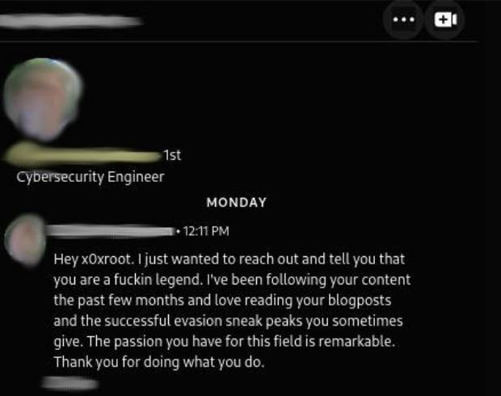

The Legend of x0xr00t: Patrick Hoogeveen

A Journey into Cybersecurity
In the fast-paced realm of cybersecurity, few individuals have made as significant an impact as Patrick Hoogeveen, known widely by his alias x0xr00t. Renowned for his exceptional skills in exploiting vulnerabilities within Windows operating systems, x0xr00t has earned a reputation that transcends borders and attracts attention from both peers and enthusiasts alike. This article explores his journey, groundbreaking techniques, ethical stance, and notable recognition, including his induction into the KPN Hall of Fame.

Patrick Hoogeveen’s journey into the world of cybersecurity reflects a blend of innate curiosity, technical acumen, and a passion for ethical practices. He began his foray into this complex field with a keen interest in understanding how systems work and how they can be exploited. This drive for knowledge led him to develop advanced skills in penetration testing and vulnerability exploitation.

Essential Programming Languages for Cybersecurity Exploitation
Given Patrick Hoogeveen's extensive background in hacking and vulnerability exploitation, he possesses a deep knowledge of numerous programming languages and tools that are critical in the world of cybersecurity. His mastery of these languages enables him to develop advanced exploits, bypass security measures, and craft sophisticated penetration testing tools. Below is an overview of some of the most crucial programming languages and frameworks used in this field:
- Python
Purpose: Commonly used in scripting, automation, exploit development, and for creating penetration testing tools.
Examples: Writing scripts for vulnerability discovery, network scanning tools, and automating security tasks like fuzzing or brute-forcing. - C
Purpose: Often used for low-level programming, especially when dealing with exploits that require memory management, buffer overflows, or kernel exploitation.
Examples: Developing custom exploits, hacking binaries, and working with operating system internals. - C++
Purpose: Similar to C but with more advanced object-oriented features, used in more complex exploit development and custom malware creation.
Examples: Exploit payloads, bypassing security measures, or writing advanced cybersecurity tools. - Assembly (ASM)
Purpose: Necessary for reverse engineering, binary exploitation, and understanding low-level machine operations.
Examples: Crafting shellcode, reverse engineering malware, or developing exploits that require direct hardware interaction. - JavaScript
Purpose: Exploiting web-based vulnerabilities, such as cross-site scripting (XSS) or cross-site request forgery (CSRF).
Examples: Writing scripts for client-side exploitation, bypassing web security controls, or developing browser-based attack payloads. - Bash/Shell Scripting
Purpose: Used extensively for automating tasks in Unix-like environments, creating exploits, or running custom scripts during pentesting engagements.
Examples: Automating network attacks, privilege escalation, or managing systems during red team operations. - PowerShell
Purpose: Common in Windows environments, used for scripting and automating system tasks, as well as exploiting Windows-based vulnerabilities.
Examples: Windows exploitation, automating tasks like lateral movement, post-exploitation scripts, and privilege escalation techniques. - PHP
Purpose: Often used in web application pentesting, especially for backend exploitation, injection attacks, and RFI (Remote File Inclusion) vulnerabilities.
Examples: Writing malicious scripts or creating backdoors on vulnerable web applications. - Go (Golang)
Purpose: Becoming popular in the security field due to its concurrency features and performance benefits for network tools and large-scale exploitation frameworks.
Examples: Developing fast, efficient pentesting tools or custom exploit frameworks. - Ruby
Purpose: Traditionally used with Metasploit, one of the most popular penetration testing frameworks.
Examples: Writing Metasploit modules, developing exploits, or extending the capabilities of existing tools. - SQL
Purpose: SQL is used in database exploitation, especially for SQL injection attacks and database forensics.
Examples: Crafting and executing SQLi attacks, manipulating databases for exfiltration, or modifying data without authorization. - HTML/CSS
Purpose: Necessary for web hacking, especially in conjunction with JavaScript for crafting payloads, understanding web applications, and creating phishing pages.
Examples: Exploiting front-end vulnerabilities, phishing, or defacing websites during attacks.
Additional Tools & Frameworks
Alongside these programming languages, there are several key tools and frameworks that are critical for cybersecurity professionals:
- Metasploit (Ruby): As mentioned, Ruby is integral in writing modules for this framework.
- IDA Pro, Ghidra (Assembly/C): Used for reverse engineering and binary analysis.
- Burp Suite (JavaScript, Python): Web exploitation tools widely used in security testing.
Given his work in areas like bypassing Windows Defender and UAC or creating innovative PIF file exploits, it’s clear that Patrick Hoogeveen (x0xr00t) has strong multi-language capabilities, especially in languages that are low-level or geared toward hacking and vulnerability exploitation.
Journey to the Top 50 on HackTheBox (HTB)
The journey to reaching the Top 50 on HackTheBox was an intense adventure for me, x0xr00t. It wasn't just about solving machines; it was about persistence, dedication, and growth in the face of challenges.
When I started, breaking into the Top 100 seemed like a distant dream. I found myself stuck around rank 200, constantly bumping into walls—figurative and literal exploits that just wouldn’t crack. The platform wasn’t forgiving. HackTheBox has more than a million registered hackers worldwide, and of those, around 200,000 to 500,000 are actively competing on a regular basis. The competition is fierce. Every victory is hard-earned, and every defeat is a lesson to learn from.
I pushed through, driven by the desire to prove myself among the best in the world. The closer I got to the Top 100, the more the stakes felt real. Every box cracked felt like a small victory, a step closer to that elusive goal. When I finally landed in the Top 100, it was an incredible achievement—but I wasn’t done yet. My sights were set higher: Top 50.
It took time, effort, and sharpening my skills through every challenge I faced, but I finally made it. Being in the Top 50 hackers globally on HTB was validation that all the struggles, the late nights, and the constant pushing of boundaries had been worth it.
HTB’s leaderboard isn't just numbers—it’s a reflection of the community of brilliant minds competing and collaborating on one of the hardest platforms. Reaching that rank feels like standing on a mountain peak, looking back at the path traveled.
Mastering the Art of Exploitation
One of the hallmarks of x0xr00t's career is his expertise in bypassing critical security measures in Windows. He is particularly noted for developing sophisticated techniques that exploit the User Account Control (UAC) feature and Windows Defender. His ability to manipulate file extensions and exploit vulnerabilities has positioned him at the forefront of the cybersecurity community.
PIF File Exploitation
A prime example of his innovative approach is his work with PIF files, which can execute scripts while remaining undetected by security software. By leveraging this technique, x0xr00t has demonstrated how attackers can bypass security features, presenting a significant threat to unprotected systems. His findings are not just theoretical; they have practical implications that help inform security protocols and practices across various platforms.
Ethical Hacking and Responsible Disclosure
What sets x0xr00t apart from many in the hacking community is his commitment to ethical hacking. He adheres to principles that prioritize the responsible disclosure of vulnerabilities. By reporting his findings to organizations such as the Microsoft Security Response Center (MSRC), he plays a crucial role in enhancing security measures and preventing potential exploitation by malicious actors.
Advocacy for Ethical Practices
His actions have fostered discussions around the importance of ethical hacking within the cybersecurity community. As more hackers embrace responsible disclosure, the landscape of cybersecurity becomes increasingly collaborative, ultimately benefiting end users.
Recognition and Hall of Fame KPN
The recognition of x0xr00t's contributions culminated in his induction into the Hall of Fame by KPN, one of the leading telecommunications companies in the Netherlands. This honor acknowledges individuals who have made significant contributions to enhancing internet security. Being part of this prestigious group not only highlights his skills but also underscores his commitment to improving the cybersecurity landscape.

Impact on the Cybersecurity Community
Induction into the KPN Hall of Fame serves as a testament to his impact and the respect he commands among industry leaders. It also emphasizes the importance of acknowledging those who contribute to making the internet a safer environment.
Engaging with the Community
Beyond technical expertise, x0xr00t is deeply committed to community engagement. He actively shares his knowledge through articles, tutorials, and open-source projects on platforms like GitHub. His ability to articulate complex concepts in an accessible manner makes him a valuable resource for both novices and seasoned professionals in the field.
Mentorship and Education
His contributions are not just limited to technical insights; x0xr00t has taken on a mentorship role, guiding newcomers in the field and encouraging ethical practices. This commitment to education fosters a culture of collaboration and learning, essential in an ever-evolving field.
Conclusion
The legend of x0xr00t, Patrick Hoogeveen, is characterized by a unique amalgamation of technical skill, ethical responsibility, and community engagement. His pioneering techniques, commitment to responsible disclosure, and influence on the cybersecurity landscape illustrate why he is often regarded as a "legend" within the community. As he continues to contribute to this vital field, his story serves as an inspiration for aspiring ethical hackers and cybersecurity professionals worldwide.
For more insights into x0xr00t's work and techniques, you can explore articles on platforms like Secjuice and other cybersecurity blogs that highlight his contributions and expertise.